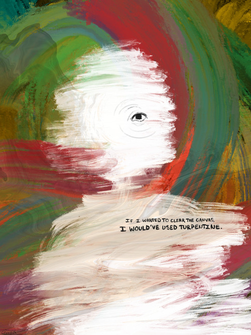

Tucked In
As I was going up the stair
I met a man who wasn't there
He wasn't there again today
Oh how I wish he'd go away
-The Magnus Archives, Episode 85 Tucked In
(Exerpt from Antagonish, By William Hughes)

My Response
The Magnus Archives has a special place in my heart. There are so many good quotes I could've done, but I chose this one because I think it's one of the best examples of the type of horror the show creates. The story follows a man who sees the man on the stairs one day, the man who isn't there. He decides that the most logical thing to do is to follow the man who isn't there up the stairs. By the time they reach the top, the man who isn't there is now there, solid, alive, and the statement giver is now gone. He is there, but not there. It ends up with the story getting extremely violent, with him attempting to take new victims up the stairs, and when they fail to reach the top, they die. There is a level of disassociation the man has from the experiences he causes because he isn't really there. This story causes a low level of dread, in a way that's difficult to explain. The way it's read out is mundane, like a man telling an everyday story of his life. You don't really feel how quickly it spirals until you are in the thick of it, and that's generally what this episode is about.
I would recommend The Magnus Archives to fans of horror, especially slower-paced stories. The show has 200 episodes, but it is really worth listening to to hear all of the interconnected horror elements slowly blend together.